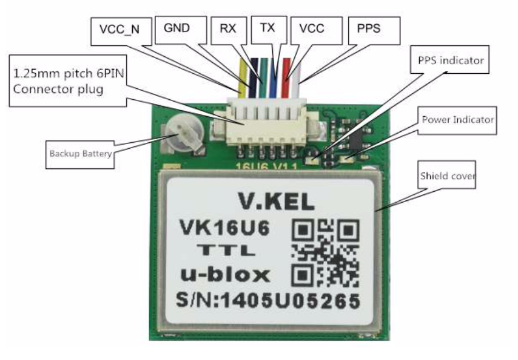

GPS VK16U6 CleanFlight Setup
Here's a quick guide on install the VK16U6 GPS on a CleanFlight or BetaFlight controller.

Pinouts
VCC_N - for enabling the uBlox module, leave it disconnected to keep the module turned on. GND or floating == ON. Pull it high to disable the module. This is useful in applications where we want to turn off the module temporarily to save power, but in our case, we want it on all the time
GND - Ground
RX - Flight Controller UART TX
TX - Flight Controller UART RX
VCC - Power, 3.3 to 5V. I use...